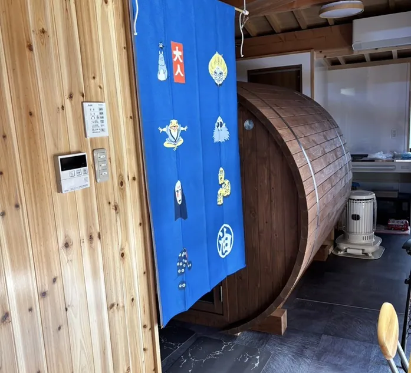
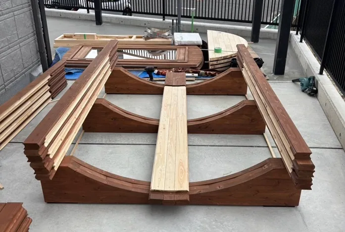

「自宅にバレルサウナを設置したい」「設置することでどんなメリットがあるのか知りたい」など、このような疑問はありませんか？
こちらでは、自宅でバレルサウナを楽しむための設置条件や注意点、メリットについて詳しく解説します。さらに、サイズや仕様ごとにおすすめのバレルサウナを紹介し、最適なモデル選びをサポートします。
高品質な国産ひのきを使用したバレルサウナを提供するRink SAUNAがお届けする情報です。最後まで読めば、自宅に最適なバレルサウナの選び方や設置方法が明確になり、理想のサウナ空間を実現する準備が整います。
自宅にバレルサウナを設置するメリット

バレルサウナは、ご自宅で手軽にサウナ体験を楽しめる魅力的な設備です。そのリラックスしやすい環境と健康をサポートするメリットは、多くの人々を魅了しています。ここでは、自宅にバレルサウナを設置するメリットについて詳しく紹介します。
バレルサウナがもたらすリラックスしやすい環境と健康サポート
バレルサウナは、その独特の形状とひのきの香りによって、心身ともにくつろぎを感じやすい雰囲気を得ることが可能です。温かい空間で心地よい時間を過ごせる環境を提供し、心身のリフレッシュをサポートするバレルサウナは、自宅で手軽に楽しめる癒やしといえるでしょう。
バレルサウナはリラックスしやすい環境の提供だけではありません。温熱効果によって気持ちよく汗を流せ、爽快感を楽しめます。以下に身体・心・脳に対する健康効果をまとめました。
| メリット | 説明 |
|---|---|
| 疲労回復 | 心拍数が高まり、血流が上昇。身体に必要な酸素や酵素が全身に供給されて体と脳の疲労回復に繋がる。 |
| 美肌効果 | 発汗作用が促されることにより肌の老廃物が排出され、肌のデトックス効果に繋がる |
| 自律神経の調整 | 交感神経を刺激し、自律神経の調整能力を高めてストレス解消 |
バレルサウナを自宅に設置することで、日常の中でサウナの恩恵をいつでも、好きなだけ享受できるようになります。設置条件さえクリアすれば、移動や混雑とは無縁の、完全なプライベート空間でサウナを楽しむことができ、日々の暮らしに豊かさと癒やしをプラスできます。
自宅設置の魅力：プライベート空間と利便性を満喫
自宅にバレルサウナを設置することで、好きな時に好きなだけサウナを楽しめる、まさに自分だけのプライベート空間を実現できます。誰にも気兼ねすることなく、自分のペースでサウナ浴を楽しめるのは大きな魅力です。好きなアロマを焚いたり、読書をしたりとサウナの時間を自由にカスタマイズできます。また、家族や親しい友人と特別な時間を共有することも可能です。
さらに、自宅設置ならではの利便性も見逃せません。思い立ったらいつでもサウナに入れる手軽さは、日々の生活にゆとりと豊かさをもたらします。わざわざサウナ施設へ行くための移動時間や予約の手間も不要です。自宅でリラックスしながら、好きなタイミングでサウナ浴を楽しめます。天候に左右されることなく、快適な環境でサウナを利用できる点もメリットです。以下は、プライベート空間と利便性についてのメリットをまとめた表です。
| メリット | 説明 |
|---|---|
| プライベート空間 | 誰にも気兼ねなく、自分のペースで楽しめる |
| 利便性 | 好きな時に好きなだけ利用可能 |
| カスタマイズ性 | アロマ、読書など自由に楽しめる |
| 特別な時間の共有 | 家族や友人と特別な時間を過ごせる |
| 移動時間不要 | サウナ施設への移動時間や予約の手間が省ける |
| 天候に左右されない | 雨の日でも快適にサウナを利用できる |
自宅にバレルサウナを設置する際の必要条件としては、十分な設置スペースの確保が大切になります。バレルサウナのサイズや形状に合わせて、適切な設置場所を選びましょう。また、電気工事が必要となる場合もあるため、設置条件を確認することも必要です。
バレルサウナ設置前に知っておきたいこと：注意点・設置条件

憧れのバレルサウナを自宅に設置するには、いくつかの条件と注意点があります。事前に確認しておけば、設置後のトラブルや後悔を未然に防げます。快適なサウナライフを送るためにも、以下の点に注意して設置場所を選びましょう。
| 項目 | 説明 |
|---|---|
| 設置スペース | バレルサウナのサイズ＋1m以上の余裕 |
| 地面の状況 | 平たんで水平な場所 |
| 水はけ | 良好な排水設備 |
| 電源 | サウナストーブに適した電源容量 |
| 安全距離 | 熱源との距離の確保 |
まず、バレルサウナを設置するための十分なスペースが必要です。バレルサウナ本体のサイズに加え、サウナの出入りやメンテナンスに必要なスペースも考慮しましょう。
次に、地盤の強度も大切です。バレルサウナは重量があるため、地面が水平で、厚さ10cm程度のコンクリート基礎強度があれば安心です。土や芝生上だと湿気も溜まりやすいので、必要に応じて地盤改良を行いましょう。
さらに、水はけも欠かせないポイントです。サウナ使用後の排水のため、設置場所の水はけがよいか、適切な排水設備が設置可能か確認しましょう。
また、サウナストーブに必要な電源容量を確保できるか否かの確認も有用です。電気式の場合は、電源容量が不足するとブレーカーが落ちてしまう可能性があります。特に中～大型のバレルサウナについて、サイズが大きくなるほど、出力の高いサウナストーブが必要になります。家庭用の一般的な100Vでは電圧が足りず、200Vの電源（専用線）が必要になります。また必要A数も大きくなりますので、設置する前に電源環境を確認し、電気工事を手配しましょう。
加えて、使用後に換気も忘れずに行いましょう。サウナ室内の空気を入れ替える換気口を設置することで、より快適で衛生的なサウナ体験が可能になります。最適な設置場所を選び、非日常的なバレルサウナライフを満喫しましょう。
トラブルゼロで楽しむ！近隣への配慮とプライバシー対策
自宅にバレルサウナを設置して長く快適に楽しむためには、物理的なスペースだけでなく、ご近所への配慮も大切な「設置条件」の一つです。事前に少し工夫をするだけで、トラブルを防ぎ、よりリラックスできる空間を作ることができます。
特に意識したいのが、以下の2つのポイントです。
視線の対策
ととのい中に道路や隣家からの視線が気になっては、せっかくのリラックスタイムが台無しです。高さのある目隠しフェンスを設置したり、植栽で自然に視界を遮ったりすることで、プライベート感を高めましょう。
煙と匂いのマナー
住宅密集地にお住まいの場合は、煙や匂いが出にくいストーブの利用がおすすめです。「どうしても薪ストーブが良い」という場合は、煙の少ない高品質な薪を使用したり、煙突の位置を隣家の窓から遠ざけたりといった配慮が必要になります。
周囲へのマナーを守ることは、ご自身のプライベート空間を守ることにもつながります。立地環境に合わせた対策についても、ぜひお気軽にご相談ください。
自宅用バレルサウナのおすすめモデル
ご自宅にバレルサウナを設置したいとお考えの方におすすめのモデルをご紹介します。設置条件の一つとして、十分なスペースの確保が必要になります。今回紹介する、Rink SAUNAの国産ひのきバレルサウナi-barrel Small-Long R18は、比較的小さなスペースにも設置できるコンパクトな設計が魅力です。4名まで利用可能なサイズで、ご家族での利用にもおすすめです。
| モデル名 | 国産ひのきバレルサウナ i-barrel Small-Long R18 |
|---|---|
| サイズ | 直径1.8m×奥行1.8m |
| 材質 | 国産ひのき |
| 定員 | ゆったり4名 |
| 特長 | コンパクトなデザインながら、ゆったりとくつろげるサウナ室を確保。テラスやウッドデッキ、庭先など限られたスペースにも設置でき、贅沢なサウナ体験を提供します。 |
このモデルは、高品質な国産ひのき材を使用しており、耐久性と美しい木目が特徴です。ひのきの香りはリラックス効果を高め、最高のサウナ体験を提供します。また、コンパクトながらも機能性に優れ、快適なサウナ空間を実現可能です。
設置場所の広さや利用人数、ご予算に合わせて最適なモデルを選びましょう。専門業者に相談することで、設置条件に最適なバレルサウナを選べます。
バレルサウナ選び！自宅設置をする際に意識したいポイント
自宅にバレルサウナを置きたいけれど、「たくさん種類があって、どれが自分におすすめなのか分からない…」と悩んでいませんか。大切な買い物だからこそ、失敗せずにぴったりの一台を選びたいものです。以下では、バレルサウナの選び方のポイントをご紹介します。
設置スペースとサイズ
自宅の庭やテラスなど、どういった場所に置きたいですか？
置きたい場所に、検討中のモデルがきちんと収まるか、事前にサイズを測っておきましょう。サウナの出入りやメンテナンスのためのスペースも忘れずに考慮してください。
利用人数と定員
一人でゆったり使いたいですか？それとも家族や友人と一緒に楽しみたいですか？
利用人数に合わせて、適切な定員のモデルを選びましょう。大きすぎず、小さすぎないサイズを選ぶのがポイントです。
熱源の選択
電気式、薪ストーブ、ガスストーブなど、バレルサウナには様々な熱源があります。
手軽さを重視するなら電気式、本格的な薪の香りを楽しみたいなら薪ストーブなど、あなたのライフスタイルや設置環境に合わせて選びましょう。電気式の場合は、電源工事が必要な場合もあるので、事前に確認が必要です。
これらのポイントをしっかり押さえることで、あなたにとって素敵な自宅サウナライフが実現できます。迷ったときは、専門業者に相談して、あなたにおすすめの一台を見つけてもらいましょう。
自宅用バレルサウナについてお悩みの方はRink SAUNAまで
RinkSAUNAのバレルサウナであれば、国産ひのきの香りに包まれながら、自宅で深いリラクゼーションを堪能できます。抗菌性・防虫性・消臭性に優れた高品質なひのき材を使用し、長期間快適に使えるよう設計されたこだわりのバレルサウナです。
設置の際には、スペースや熱源の選択、メンテナンスなどのポイントを押さえることが大切です。RinkSAUNAでは、自宅環境に最適なバレルサウナを提案し、納期順守の迅速な納品と確実な施工でスムーズな導入をサポートします。全国対応で配送・設置までお任せいただけるため、初めての方でも安心して導入できます。
電気ヒーター・薪ストーブ・ガスストーブの中からライフスタイルに合った熱源を選び、理想のサウナ空間を手に入れましょう。自宅で特別な癒やしの時間を過ごしたい方、サウナをビジネスに活用したい方にも最適な一台を提案します。ワンランク上のサウナライフを始めたい方は、お気軽にお問い合わせください。